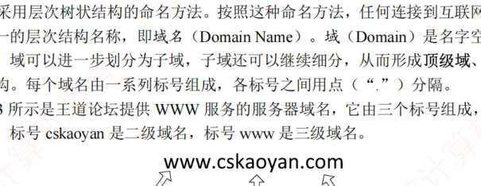
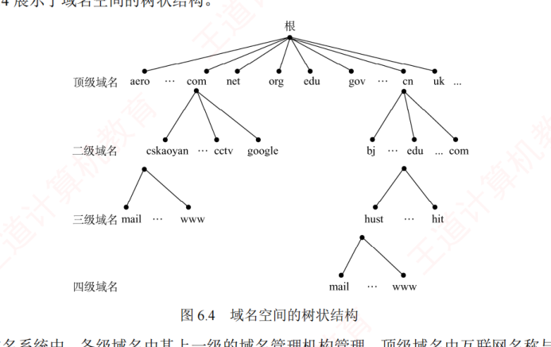
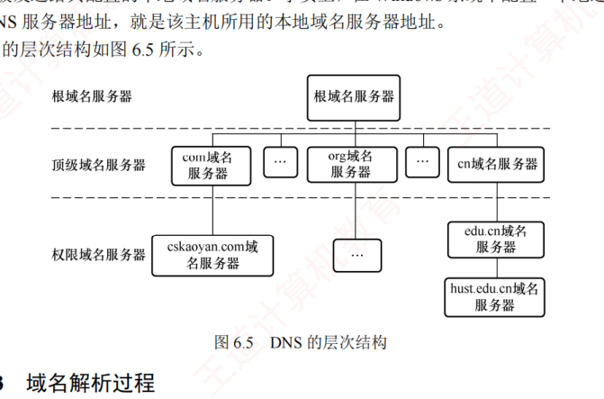
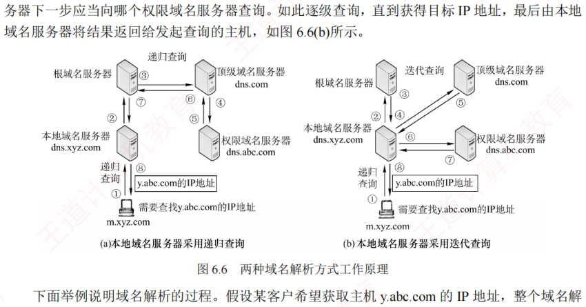

6.2 域名系统 DNS
对应王道教材 6.2 节（教材 P270–P273）· 本节属于 408 考纲范围
域名系统（Domain Name System，DNS）是互联网使用的命名系统，用于将便于人们记忆、具有特定含义的主机名（如 www.cskaoyan.com）转换为便于机器处理的 IP 地址。相比难记的数字形式，人们更倾向于使用具有特定含义的字符串来标识互联网上的计算机。DNS 采用客户/服务器模型，其协议运行在 UDP 之上，使用 53 号端口。
从概念上，DNS 可分为三部分：层次域名空间、域名服务器和解析器。
6.2.1 层次域名空间
互联网采用层次树状结构的命名方法。按照这种命名方法，任何连接到互联网的主机或路由器都有唯一的层次结构名称，即域名（Domain Name）。域（Domain）是名字空间中一个可被管理的划分。域可以进一步划分为子域，子域还可以继续细分，从而形成顶级域、二级域、三级域等层次结构。每个域名由一系列标号组成，各标号之间用点（"."）分隔。
如图 6.3 所示是王道论坛提供 WWW 服务的服务器域名，它由三个标号组成，其中标号 com 是顶级域名，标号 cskaoyan 是二级域名，标号 www 是三级域名。

- 标号中的英文字母不区分大小写；
- 标号中除连字符（-）外，不得使用其他标点符号；
- 每个标号不超过 63 个字符，整个域名（含分隔点）的总长度不超过 255 个字符；
- 级别最低的域名写在最左边，级别最高的顶级域名写在最右边。
顶级域名（Top Level Domain，TLD）主要分为以下三大类：
- 国家顶级域名（ccTLD）：代表国家的域名，如 "cn" 表示中国，"us" 表示美国；
- 通用顶级域名（gTLD）：常见的包括 "com"（公司）、"net"（网络服务机构）、"org"（非营利性组织）、"edu"（教育机构）和 "gov"（国家或政府机构）等；
- 基础结构域名（arpa）：用于反向域名解析，即将 IP 地址转换为对应的域名。

在域名系统中，各级域名由其上一级的域名管理机构管理。顶级域名由互联网名称与数字地址分配机构（ICANN）管理。国家顶级域名下的二级域名由相应国家自行规定和管理。每个组织还可以将其所辖的域名进一步划分为若干子域，并将这些子域委托给其他组织管理。例如，负责管理 cn 域的中国将 edu.cn 子域授权给中国教育和科研计算机网（CERNET）进行管理。
6.2.2 域名服务器 考点
域名到 IP 地址的解析是由运行在域名服务器上的程序完成的。一个服务器负责管辖（或有管理权限）的范围称为区，其范围小于或等于域。一个区内的所有节点必须是连通的，每个区都设有相应的权限域名服务器（也称授权域名服务器），用于保存该区中所有主机的域名到 IP 地址的映射信息。每个域名服务器不仅要能够解析部分域名到 IP 地址的映射，还要能维护指向其他域名服务器的信息：当自身无法完成解析时，要能知道向哪个服务器进一步查询。
DNS 使用大量的域名服务器，它们按层次结构组织。没有任何一台域名服务器包含互联网上所有主机的映射，相反，这些映射分布在所有域名服务器上。有四种类型的域名服务器：
| 类型 | 层级地位 | 主要职责 |
|---|---|---|
| 根域名服务器 | DNS 层次结构中的最高层级 | 知道全部顶级域名服务器的域名和 IP 地址；本地域名服务器无法解析时首先向它查询。全球共 13 个根域名服务器（每个实际是由多个冗余服务器组成的集群）；通常并不直接把待查询的域名解析成 IP 地址，而是返回下一步应查询的顶级域名服务器的地址 |
| 顶级域名服务器 | 管理在该顶级域注册的所有二级域名 | 如 .com 顶级域名服务器管理所有以 .com 结尾的域名；收到 DNS 查询请求时，返回相应的响应（可能是最终的解析结果即目标 IP 地址，也可能是下一步应当查找的域名服务器的 IP 地址） |
| 权限域名服务器（授权域名服务器） | 管理特定区的域名信息 | 每台主机必须在所属区的权限服务器处登记，该服务器总能将其管辖的主机名解析为对应的 IP 地址。为提高可靠性，通常建议每个区配置至少两个权限域名服务器；许多本地域名服务器也同时承担权限域名服务器的角色 |
| 本地域名服务器 | 域名系统的关键入口 | 每家 ISP、一所大学甚至大学的各个院系通常都会部署自己的本地域名服务器。主机发起 DNS 查询时，请求首先被发送给它配置的本地域名服务器（Windows 中配置"本地连接"时填写的 DNS 服务器地址） |

6.2.3 域名解析过程 考点
域名解析是指将域名转换为 IP 地址的过程。当客户端需要进行域名解析时，会通过本机的 DNS 客户端构造一个 DNS 请求报文，并以 UDP 数据报的形式发送给本地域名服务器。域名解析有两种方式：递归查询和迭代查询。
- 主机向本地域名服务器的查询都采用递归查询：若本地域名服务器不知道被查询域名的 IP 地址，它会以 DNS 客户的身份，代替主机向其他根域名服务器继续发出查询请求，而不是让主机自行进行后续查询。无论后续采用何种查询方式，主机向本地域名服务器的查询都采用递归查询。
- 本地域名服务器向其他域名服务器可采用递归查询或迭代查询。
递归查询（图 6.6(a)）：本地域名服务器只需向根域名服务器发起一次查询，后续的查询过程由各级域名服务器之间递归完成。最终，根域名服务器将请求的 IP 地址返回给本地域名服务器，再由本地域名服务器将结果返回给原始主机。由于这种方式会给根域名服务器带来过重负载，实际中几乎不被采用。
迭代查询（图 6.6(b)）：本地域名服务器向根域名服务器的查询通常采用迭代查询。当根域名服务器收到本地域名服务器的迭代查询请求时，要么直接给出所查询的 IP 地址，要么告诉本地域名服务器"你下一步应向哪个顶级域名服务器查询"。随后，由本地域名服务器向该顶级域名服务器发起新的查询。同样，顶级域名服务器收到请求后，要么直接给出所查询的 IP 地址，要么告诉本地域名服务器下一步应当向哪个权限域名服务器查询。如此逐级查询，直到获得目标 IP 地址，最后由本地域名服务器将结果返回给发起查询的主机。

假设某客户希望获取主机 y.abc.com 的 IP 地址：
- 客户向其本地域名服务器发送 DNS 请求报文（递归查询）；
- 本地域名服务器收到请求后，先查询本地缓存；若未命中，则以 DNS 客户身份向根域名服务器发送解析请求报文（迭代查询）；
- 根域名服务器收到请求后，识别该域名属于 .com 顶级域，返回 .com 顶级域名服务器 dns.com 的 IP 地址；
- 本地域名服务器向顶级域名服务器 dns.com 发送解析请求报文（迭代查询）；
- 顶级域名服务器 dns.com 收到请求后，识别该域名属于 abc.com 区，返回其权限域名服务器 dns.abc.com 的 IP 地址；
- 本地域名服务器向权限域名服务器 dns.abc.com 发送解析请求报文（迭代查询）；
- 权限域名服务器 dns.abc.com 收到请求后，返回 y.abc.com 对应的 IP 地址；
- 本地域名服务器将结果保存到本地缓存，并返回给客户。
为提高 DNS 查询效率并减少互联网上的查询流量，域名服务器广泛使用 DNS 高速缓存，用于存储近期查询过的域名与 IP 地址的映射。当后续收到相同域名的查询时，服务器可直接从缓存返回结果，无须再次发起完整的解析流程。由于主机名与 IP 地址的映射关系并非永久有效，DNS 缓存中的记录会设置生存时间（TTL），到期后自动失效并被清除。此外，主机端也常维护本地 DNS 缓存，只有当本地缓存未命中时，才会向 DNS 服务器发起查询，从而进一步提升解析速度并减轻网络负载。